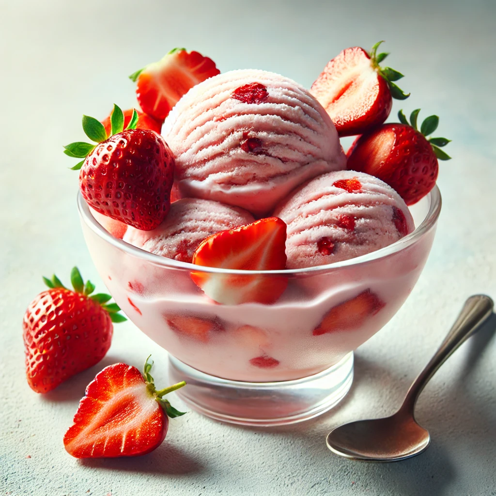
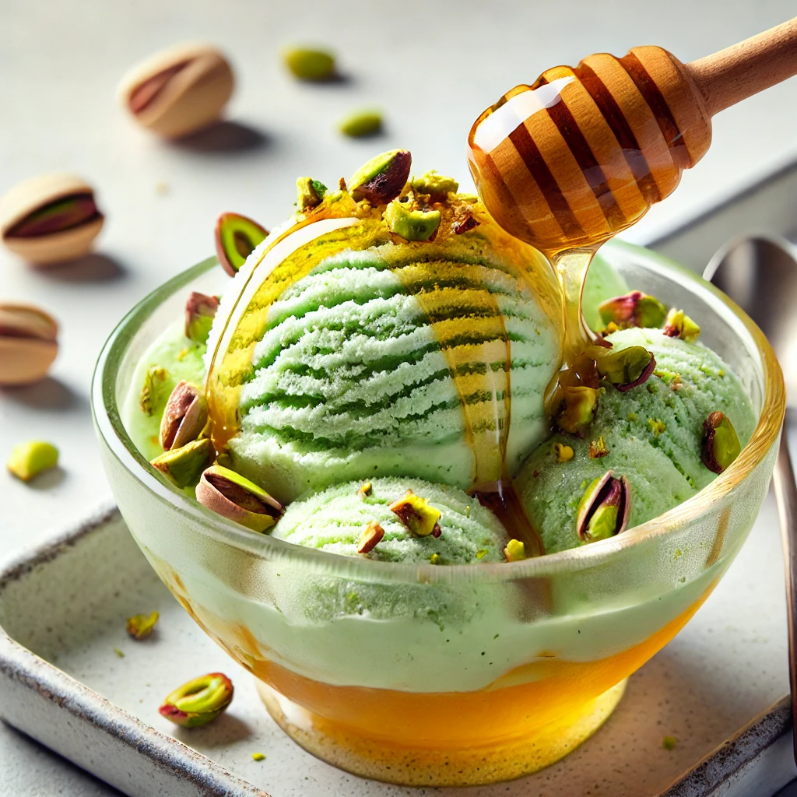
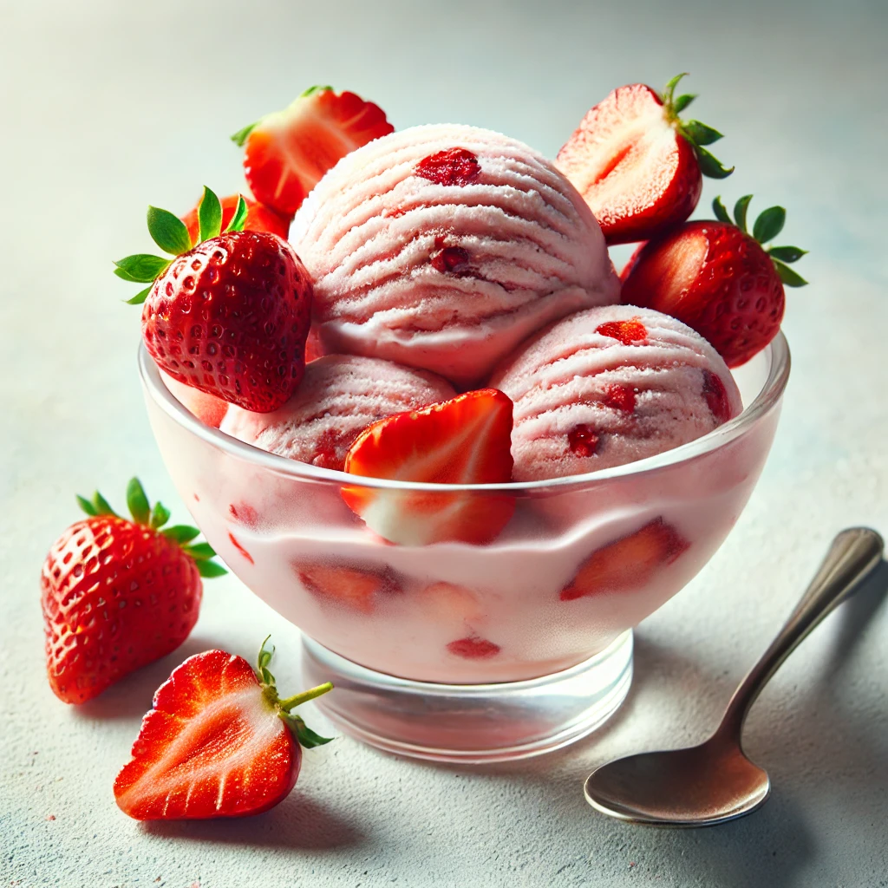
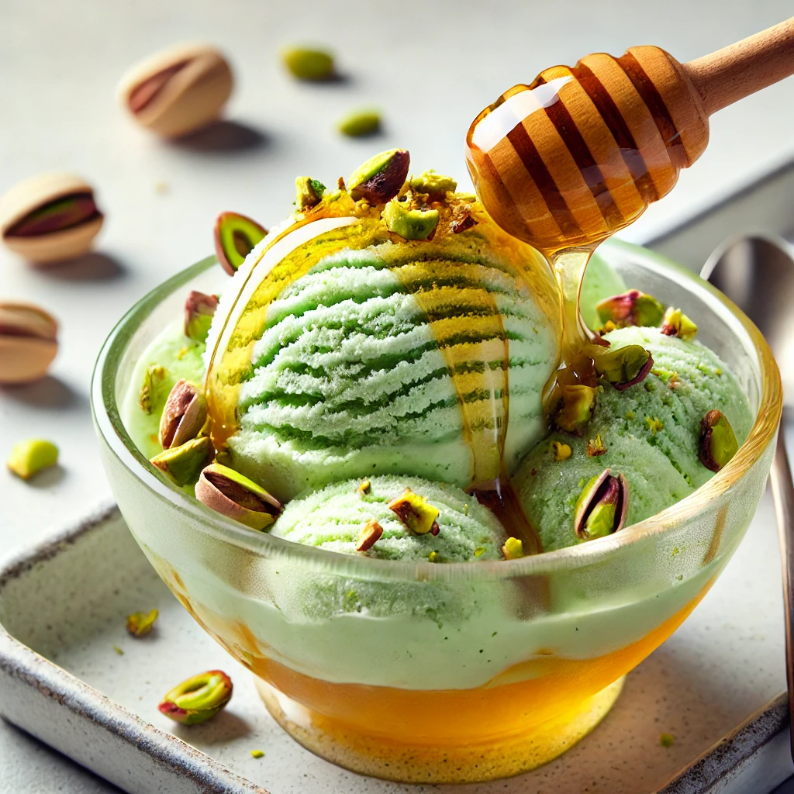
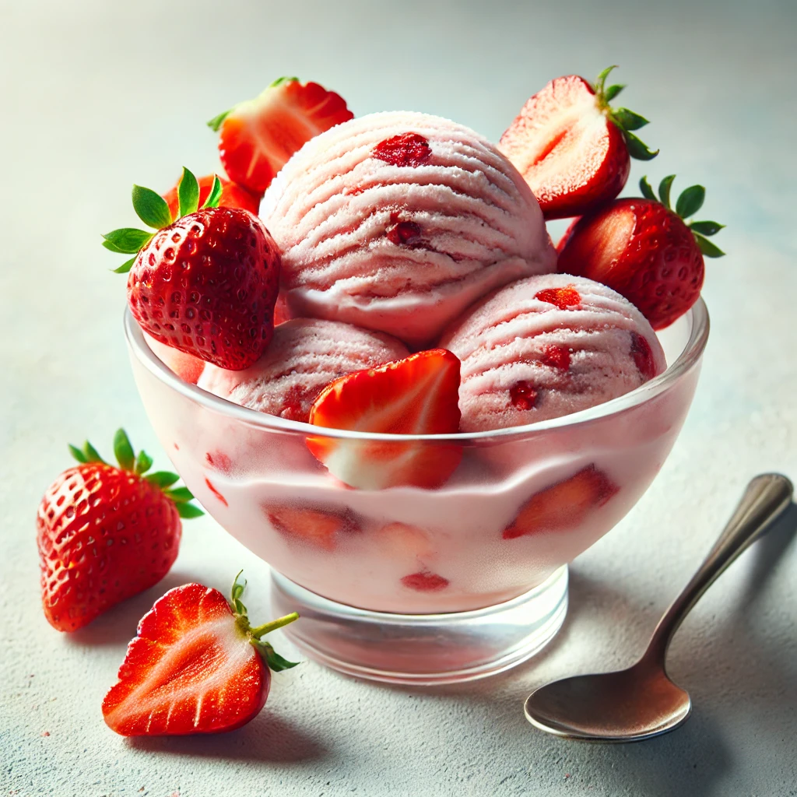
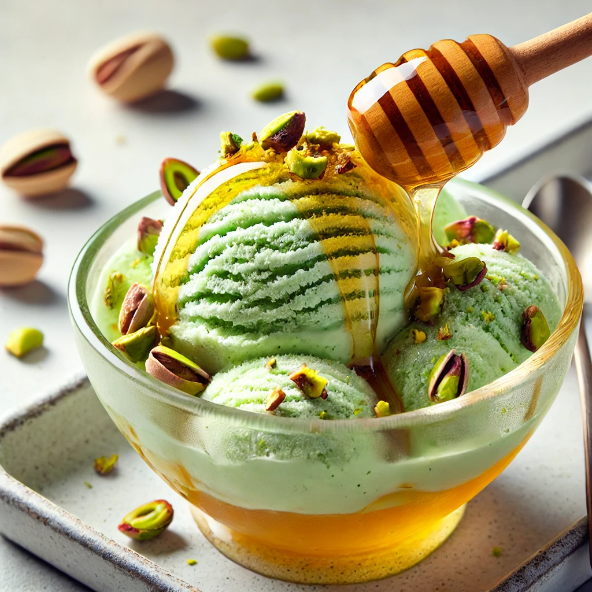

Sabores que Derretem o Coração
 



Venha provar os nossos sabores exclusivos durante a inauguração! Degustações gratuitas disponíveis para todos os visitantes.
Sorvetes & Livros - Um lugar para se deliciar e se inspirar!
Junte-se a nós para a inauguração da Milk-Shakespeare, uma combinação única de sorveteria e livraria! Sabores incríveis, histórias cativantes e momentos inesquecíveis esperam por você.
Data: 12 de dezembro de 2024
Horário: 17h
Local: Rua 7-A, Santa Maria, Número 2, Orizona-GO
Traga a família e amigos para essa tarde deliciosa!


Venha provar os nossos sabores exclusivos durante a inauguração! Degustações gratuitas disponíveis para todos os visitantes.
Sim, o evento de lançamento é totalmente gratuito! Traga sua família e amigos para conhecer a Milk-Shakespeare.
Sim! Durante o evento, teremos degustações gratuitas de nossos sabores exclusivos de sorvete.
Claro! Teremos um espaço aconchegante para leitura e troca de livros, então traga o seu preferido para compartilhar ou apenas para ler enquanto saboreia um sorvete.